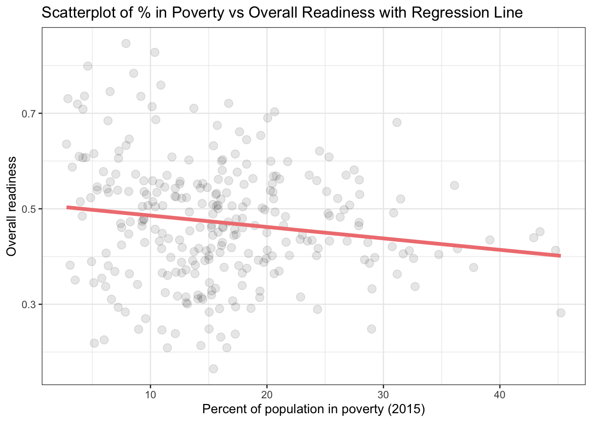

Linking to GEOS 3.11.0, GDAL 3.5.3, PROJ 9.1.0; sf_use_s2() is TRUE
library(feasts)
Loading required package: fabletools
library(dplyr)library(janitor)
Attaching package: 'janitor'
The following objects are masked from 'package:stats':
chisq.test, fisher.test
# Set the filepath hererootdir <- ("/Users/lianechen/Documents/MEDS_2023/Fall_2023/EDS222/Final/eds222-climateadapt")datadir <-file.path(rootdir,"data")
#create scatterplot to understand informationggplot(data=income_readiness, aes(x=percent_of_population_in_poverty_2015, y = overall_readiness)) +geom_point(size=3) +theme_bw() +labs(title ="Scatterplot of % in Poverty vs Overall Readiness for Climate Adapatation",x ="Percent of population in poverty (2015)", y ="Overall readiness")

# Compute the correlation coefficient to quantify the strength and direction of the relationshipcor(income_readiness$percent_of_population_in_poverty_2015, income_readiness$overall_readiness)
[1] -0.1565957
Magnitude of the Correlation Coefficient:
The correlation coefficient ranges from -1 to 1.
A value of -1 indicates a perfect negative correlation, 0 indicates no correlation, and 1 indicates a perfect positive correlation.
In this case, the value is close to 0, which suggests a weak correlation.
Sign of the Correlation Coefficient:
The negative sign indicates a negative correlation.
A negative correlation means that as one variable (percentage in poverty) increases, the other variable (overall adaptation readiness) tends to decrease.
Interpretation:
With a correlation coefficient of -0.1565957, there is a slight tendency that areas with a higher percentage of people in poverty may have lower overall adaptation readiness.
However, the correlation is weak, suggesting that other factors not considered in this analysis may play a more significant role in determining overall adaptation readiness.
Caution:
Correlation does not imply causation. Even though there is a correlation, it doesn't necessarily mean that poverty causes lower adaptation readiness or vice versa. Other factors might contribute to the observed relationship.
Further Analysis:
Consider exploring additional variables or conducting regression analysis to better understand the specific nature and strength of the relationship, while controlling for potential confounding variables.
Assess the statistical significance of the correlation coefficient to determine whether the observed relationship is likely due to chance.
In summary, the negative correlation coefficient suggests a weak tendency for areas with a higher percentage of people in poverty to have lower overall adaptation readiness. However, the strength of this relationship is not strong, and it's important to interpret such correlations cautiously, considering other factors that might influence the observed pattern.
# Linear regression modellinear_regression <-lm(overall_readiness ~ percent_of_population_in_poverty_2015, data = income_readiness)# Summary of the modelsummary(linear_regression)
Call:
lm(formula = overall_readiness ~ percent_of_population_in_poverty_2015,
data = income_readiness)
Residuals:
Min 1Q Median 3Q Max
-0.30807 -0.08339 -0.00655 0.07662 0.35538
Coefficients:
Estimate Std. Error t value Pr(>|t|)
(Intercept) 0.5098146 0.0163942 31.097 < 2e-16
percent_of_population_in_poverty_2015 -0.0023953 0.0009093 -2.634 0.00891
(Intercept) ***
percent_of_population_in_poverty_2015 **
---
Signif. codes: 0 '***' 0.001 '**' 0.01 '*' 0.05 '.' 0.1 ' ' 1
Residual standard error: 0.124 on 276 degrees of freedom
Multiple R-squared: 0.02452, Adjusted R-squared: 0.02099
F-statistic: 6.938 on 1 and 276 DF, p-value: 0.008913
Intercept (0.5098146):
The intercept represents the estimated value of the dependent variable when all independent variables are zero.
In this context, when the percentage of the population in poverty is zero, the estimated value of the overall adaptation readiness is approximately 0.5098.
Percentage of Population in Poverty Coefficient (-0.0023953):
The coefficient for the variable "percent_of_population_in_poverty_2015" represents the estimated change in the dependent variable (overall adaptation readiness) for a one-unit change in the independent variable (percentage of population in poverty).
In this case, for every one-unit increase in the percentage of the population in poverty, the overall adaptation readiness is estimated to decrease by approximately 0.0024.
The t-value of -2.634 indicates that this coefficient is statistically significant (p = 0.00891), suggesting that the percentage of the population in poverty has a significant effect on overall adaptation readiness.
In summary, the model suggests that both the intercept and the percentage of the population in poverty are statistically significant in predicting overall adaptation readiness.
ggplot(data=linear_regression, aes(x=percent_of_population_in_poverty_2015, y = overall_readiness)) +geom_point(alpha=0.1, linewidth=3) +geom_smooth(method='lm', formula= y~x, color="lightcoral", se=F, size=1.5) +theme_bw() +labs(title ="Regression line overlaid on scatter plot",x ="Percent of population in poverty (2015)", y ="Overall readiness")